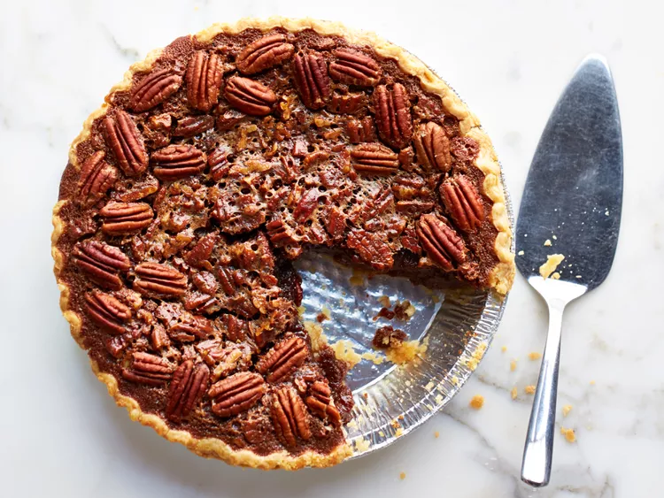

Pecan Pie

Description
Pecan pie is a pie of pecan nuts mixed with a filling of eggs, butter, and sugar. Variations may include white or
brown sugar, cane syrup, sugar syrup, molasses, maple syrup, or honey. It is commonly served at holiday meals in
the United States and is considered a specialty of Southern U.S. origin.
Ingredients
- 1 ¾ cups white sugar
- ¼ cup dark corn syrup
- ¼ cup butter
- 1 tablespoon cold water
- 2 teaspoons cornstarch
- 3 eggs
- ¼ teaspoon salt
- 1 teaspoon vanilla extract
- 1 ¼ cups chopped pecans
- 1 (9 inch) unbaked pie shell
Steps
- Preheat oven to 350 degrees F (175 degrees C).
-
Combine sugar, corn syrup, butter, water, and cornstarch in a saucepan over medium heat. Bring to a full boil;
remove from heat.
-
In a large bowl, beat eggs until frothy. Gradually beat in cooked syrup mixture. Stir in salt, vanilla, and
pecans.
- Pour pecan mixture into pie shell.
- Bake in the preheated oven until filling is set, 45 to 50 minutes.
- Enjoy!